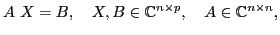
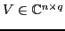
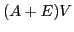
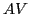
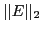

We address the solution of linear systems with multiple right-hand sides given at once:

when matrix-vector products with

the matrix-matrix product is thus represented as
, where
based on a threshold
In the single right-hand side case ( ) previous works (e.g.
[8], [4], and
[3]) have shown that variants of GMRES [7] allow
) previous works (e.g.
[8], [4], and
[3]) have shown that variants of GMRES [7] allow

to grow with the number of iterations, provided that some bounds are respected. Supposing that the cost of approximating is inversely proportional to the chosen thresholdIn the multiple right-hand side case, rather than solving the systems in sequence (that is, applying the chosen algorithm for each right hand-side) we could treat them in a ``block wise'' manner and use a variant of block GMRES [9]. Indeed the literature has shown the interest of using block Krylov subspace methods in such a situation; see, e.g., [5], [6] and [1]. The latter two mainly rely on the singular value decomposition of the block residual to perform ``deflation'', a mechanism which has been considered crucial for the reduction of the computational cost of block iterative solvers. This deflation strategy aims at detecting when a linear combination of the systems has approximately converged.
In this talk we will thus analyze an inexact block GMRES with deflation.
Our concern arises from the fact that inexact matrix-vector product
introduces a perturbation in the residual computation. First we analyze
the
impact of the perturbation  on the block residual and on its singular values
and study the behavior of two algorithms proposed in [6]
and [1] in the presence of inexact matrix-vector product.
Then we show some numerical experiments with well-known problems from
University of Florida collection [2] and discuss the
results obtained so far.
on the block residual and on its singular values
and study the behavior of two algorithms proposed in [6]
and [1] in the presence of inexact matrix-vector product.
Then we show some numerical experiments with well-known problems from
University of Florida collection [2] and discuss the
results obtained so far.